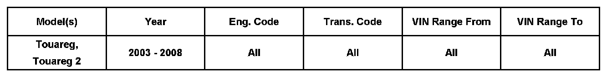
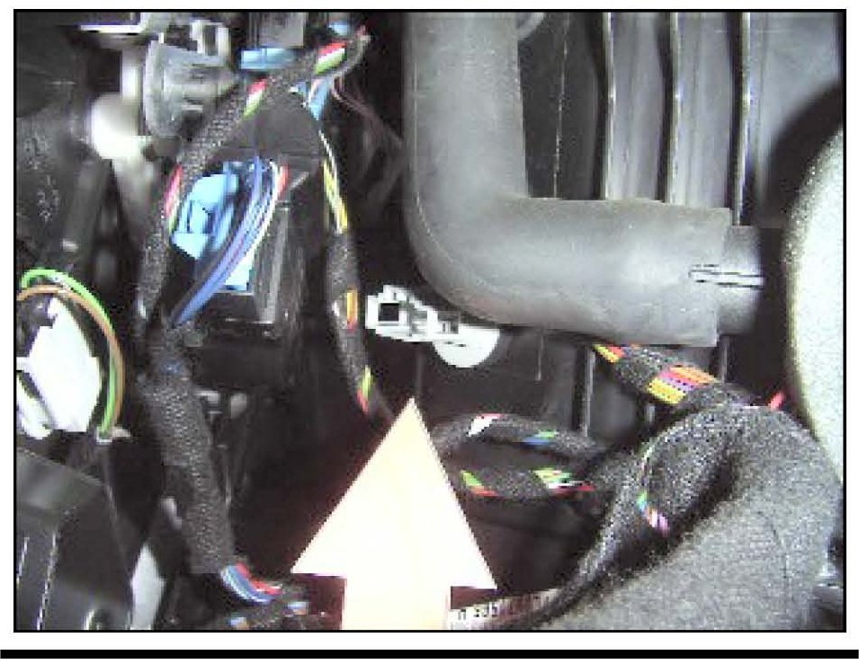
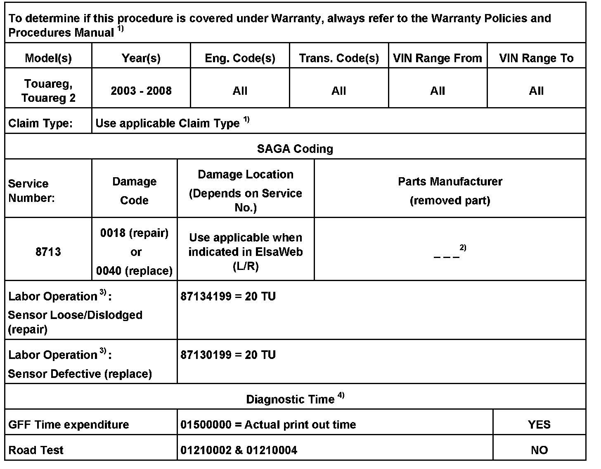
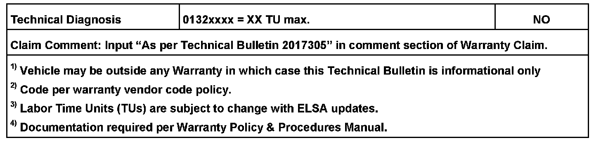
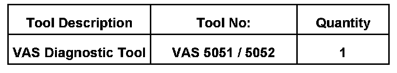

A/C - Poor Heating/Cooling Performance
87 08 02Feb 20, 2008
2017305

Affected Models
Condition
A/C Inoperative, Evaporator Temperature Sensor -G308- Damaged or Dislodged
Symptoms can be poor heat, no cooling, or insufficient cooling.
Technical Background
The following evaporator temperature sensor -G308- conditions are known to exist:
^ The evaporator temperature sensor -G308- can be dislodged from its mounting.
^ The evaporator temperature sensor -G308- temperature (measured) values are incorrect.
Note:
The condition as describe does not compromise visibility.
Production Solution
Final production counter measure pending.
Service
Sensor Mounting

Verify that sensor is installed correctly.
^ Remove passenger footwell cover. See Repair Manual Group 70, Interior Trim.
^ Inspect for proper installation. Sensor is a "Seat and Turn" design. Turn temperature sensor counter-clockwise approx. 90° then pull to remove.
Sensor Test
1. Check evaporator temperature sensor values. Use Guided Fault Finding (GFF) in VAS 5051/5052 to access - Climatronic Air Conditioning with 2 Zone Control (4 Zone Control and Manual Air Conditioning) - Check Temperature Sensor.
2. If the measured values are not correct, replace evaporator temperature sensor.
^ Turn temperature sensor counter-clockwise approx. 90° then pull to remove.
^ Disconnect electrical connection.
^ Remove sensor.


Warranty

Required Parts and Tools
No Special Parts required.
Additional Information
All part and service references provided in this Technical Bulletin are subject to change and/or removal.
Always check with your Parts Dept. and Repair Manuals for the latest information.